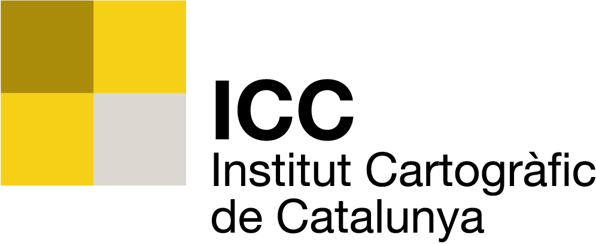
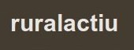

-
GeoExplorer Castellbisbal
Work in progressGeoExplorer GeoServer PostGIShttp://mapes.castellbisbal.org/portal/
A customization of the OpenGeo Suite.
The municipality of Castellbisbal is using the OpenGeo Suite to manage all their geospatial information, both internal and public. We added some custom functionality to the GeoExplorer viewer.

-
Geocalc
March 2013
GeoToolshttps://github.com/oscarfonts/geocalc
Geodetic Calculator based on GeoTools.
Converts coordinates between any pair of EPSG Coordinate Reference Systems. Easy to integrate into any Java application, can be used also as a command-line tool.
Includes spanish NTv2 Grid Shift for accurate transforms from ED50 to ETRS89 (and WGS84).
-
National Forest Monitoring Systems for UN REDD
June-December 2012
OpenLayers GeoServer GeoBatch GeoStoreAutomatic ingestion of time-dependant remote sensing data. Real-time statistics calculation via multithreaded WPS.
Pushing for in-country capacitation in open geospatial tools.
-
NTv2 coordinate transforms in GeoTools and GeoServer
April 2012
GeoTools GeoServer jGridShifthttp://geomati.co/icc_datumshift/
Incorporating NTv2 Grid Shift transforms into GeoTools and GeoServer. Update to the NADCON transforms.
Demo Reprojection Console in GeoServer. Possibility to define custom transforms, overriding EPSG definitions.
 -
Mapa d'Activitats RuralActiu
March 2012Leaflet jQuery CartoDBMinimalistic mobile-friendly map viewer.
Exploring the potential of CartoDB in a 12-hour code sprint in Portavella.
 -
Integrated Carbon Observation System
Year 2011OpenLayers GeoExt ExtJS GeoNetwork Threddshttp://ciclope.cmima.csic.es:8080/dataportal/
NetCDF Climatic Data Warehouse for scientific uses.
Internal catalog indexed by GeoNetwork, transforming from NetCDF CF conventions to ISO 19115 metadata.
User interface to query and download data packages, hiding the underlying complexities.